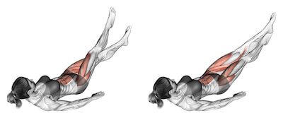

Nůžky
Výchozí poloha: Ležíte na zádech na podložce, ruce si můžete dát pod zadek. Pokud je cvik na vás těžký, opřete se o lokty.
Provedení: Nohy jsou několik centimetrů nad podložkou, natažené a střídavě je roztahujete a křižmo přes sebe snožujete. Při cvičení pravidelně dýchejte.
Jízdní Kopy - Cyklistické Zkracovačky
Výchozí poloha: Lehněte si na záda a dejte ruce za hlavu. Zvedněte nohy tak, aby byly v kolenou mírně ohnuté.
Provedení: Následně střídavými pohyby s výdechem přitahujte pravý loket k levému kolenu a pak levý loket k pravému kolenu.
Sedy Lehy - Sklapovačky
Výchozí poloha: Lehněte si na záda, kolena jsou pokrčená na podložce.
Provedení: Nadechněte se a s výdechem se zvedáte ke kolenům. S nádechem se pomalu vracíte na podložku. Tento cvik je opravdu účinný, protože pracují všechny břišní svaly, proto je podstatné provádět jej plynule bez škubání.

Kmitání nohama
Výchozí poloha: Ležíme na zádech.
Provedení: Ruce máte lehce od sebe nebo zastrčené pod zadkem, na podporu dolní části zad. Obě nohy zvedněte několik centimetrů od podlahy a střídavě kopete nohama nahoru a dolů.
Prkno (Plank)
Výchozí poloha: Předloktí položte na zem a opřete se o špičky. Tělo je jako prkno, hlavu nezvedáme nahoru ani dolů, protahujte se za temenní kostí.
Provedení: Zatněte hýžďové i břišní svaly a vydržte několik sekund v pozici a myslete na pravidelný dech.
.